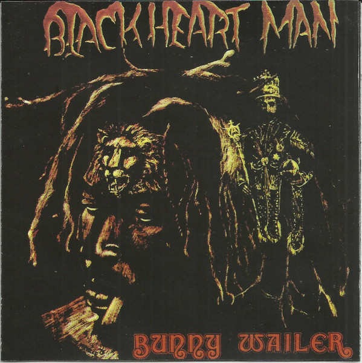
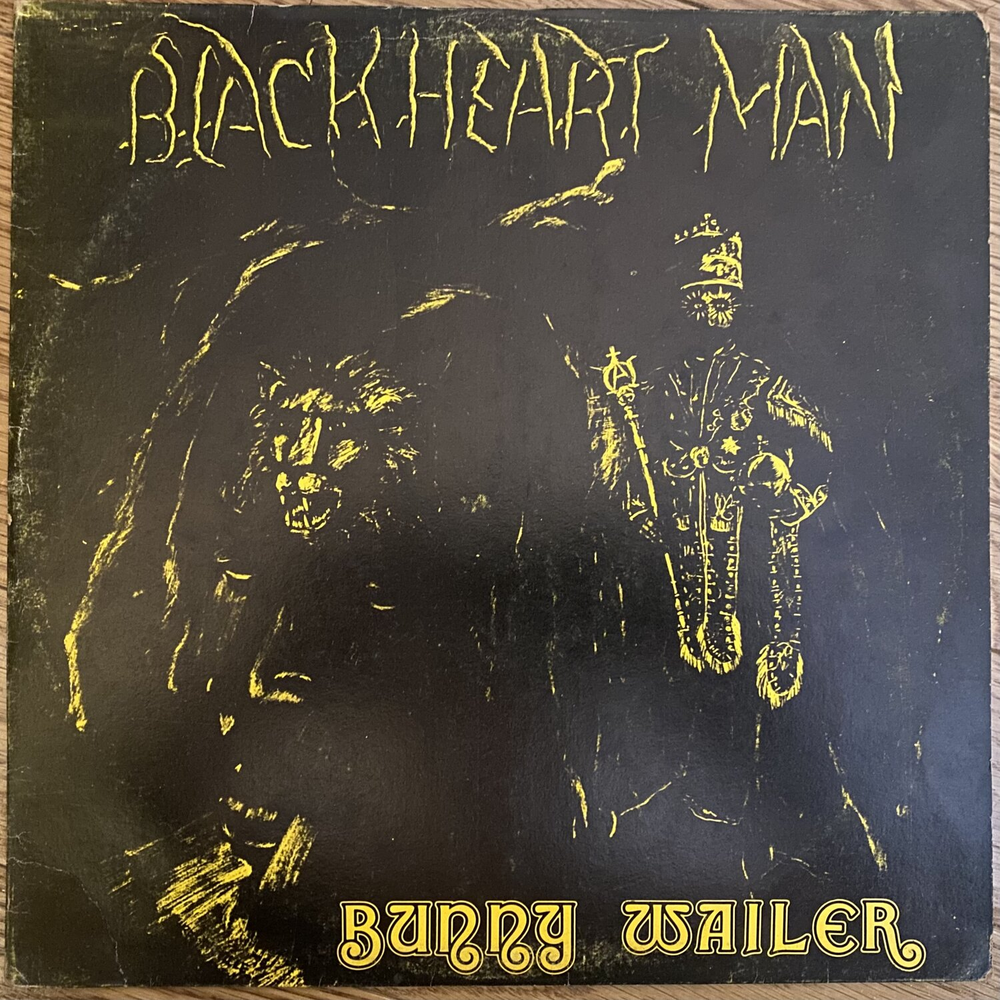
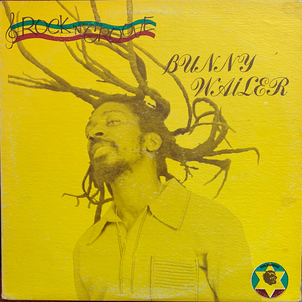
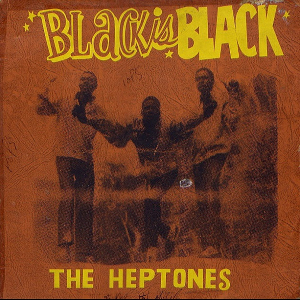
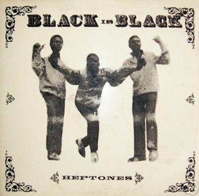

Hook Line & Sinker es el séptimo álbum de estudio sin contar los álbumes de Dub de Bunny Wailer. Fue lanzado en el año 1982, y es un álbum del que muy poca gente habla, a pesar de su aproximación al funk.
Contiene 7 canciones que fueron grabadas en Dynamic Sounds a lo largo de tres meses, de enero a marzo de 1982. Estas canciones son:
Riding
Hook Line 'N Sinker
Soul Rocking Party
The Monkey
Swop Shop
Simmer Down
Back To School
Blackheart Man
Blackheart Man fue el primer álbum de estudio que Bunny Wailer grabó. A lo largo de 1972 hasta 1975, Bunny Wailer grabaría canciones, algunas de ellas entrarían en el álbum.
Además de esto, fué su primera colaboración con Island después de la ruptura de los Wailers en enero de 1974. Las canciones en este album, con sus fechas de grabación original son:
Blackheart Man (1975)
Fighting Against Conviction (1974)
The Oppressed Song (1975)
Fig Tree (1975)
Dream Land (1971, overdubs de 1975)
Rastaman (1975)
Reincarnated Souls (1975)
Amagideon (1975)
Bide Up (1972)
This Train (1975)
Este álbum se lanzó en varias ediciones, pero la más valorada es la original Jamaicana de Solomonic, el sello propio de Bunny Wailer. Es la más valorada por las versiones diferentes que contiene, no tiene las versiones que mezcló Island, sino versiones Jamaicanas mezcladas para apelar al público local.


Struggle
Struggle es el tercer álbum de estudio de Bunny Wailer. Es un tanto especial, porque a día de hoy, no se ha lanzado en medios digitales, y me parece extraño por el impacto que podría tener en el mercado del reggae si fuese lanzado a día de hoy. Este álbum es sin duda uno de los mejores de su carrera, con canciones que explican el propósito de los rastas, historias, etc. Se lanzó en el año 1978 y vino en principio en una sóla edición, la de Solomonic jamaicana, pero al año siguiente se hizo una reedición al año siguiente en Estados Unidos.
Contiene 7 canciones en total. Estas son:
The Old Dragon
Bright Soul
Got To Move
Power Strugglers
Let The Children Dance
Free Jah Children
Struggle
En realidad, varias de estas canciones han sido lanzadas en CD, menos Got To Move y Let The Children Dance todas están en Crucial! Roots Classics, pero no son dignas de ser incluidas en una reedición en este album, porque son extraídas de vinilo.
Rock 'N' Groove
Rock 'N Groove es un álbum de Bunny Wailer que se lanzó en 1981, y fue un éxito. Consta de 7 canciones con duraciones que no bajan de los ~5 minutos, porque son versiones extendidas con Dub. Al ser tal éxito, unos cuantos años después, seis en específico, se lanzaría una recopilación de canciones que incluiría todas la de Rock 'N Groove pero con las duraciones cortadas a la mitad, eliminando el Dub de las originales. En 2007, el álbum se volvería a lanzar con canciones bonus, sin embargo se utilizaron las canciones de Rootsman Skanking para esta edición, así que ahora hay una falsa copia del álbum original.
Las canciones son:
Rock And Groove
Another Dance
Dance Rock
Cool Runnings
Roots Man Skanking
Jammins
Ballroom Floor
Es una pena que este álbum no haya tenido una reedición adecuada, pero al menos hay gente que ha compartido las canciones extraídas de vinilo, lo que supone un alivio para muchos.

Black Is Black
Black Is Black es el tercer álbum de estudio lanzado por los Heptones. Se lanzó bajo la discográfica Studio One en 1970 y tiene unas cuantas canciones que se han convertido en legendarias. Es un cachito de la historia de Studio One, que a día de hoy no ha llegado remasterizado.
La lista de canciones para este álbum es:
Some Kind Of Love
Will Not Do (This Generation)
Ready To Learn
Haven't You Any Fight Left
Stop This World
Be A Man
I Remember
Nine Pound
It's Like Heaven
You Don't Know
Ting A Ling
You've Turned Away
Una curiosidad sobre este álbum, es que se lanzó bajo diferentes nombres: Black Is Black y Ting A Ling. Además de esto, cada uno tiene una carátula diferente.


Afrikaan Blood
Afrikaan Blood es un álbum no lanzado de estudio grabado por Judah Eskender Tafari a lo largo de 1978 y probablemente 1979. Sólo sabemos de la existencia de este álbum por algunas entrevistas que se le hicieron a Judah Eskender, en las que confirmaba que existían este conjunto de grabaciones.
Algunas de las canciones que probablemente estarían en este álbum serían:
Afrikan Blood
Jah Light
Never Conquer
Rastafari Tell You
Always Trying
Just Another Day
Danger In Your Eyes
Recuerda que esto es sólo una aproximación a las canciones que podrían estar en el álbum, no sabremos cuáles serán las que estén hasta que lo lancen, si es que lo lanzan.